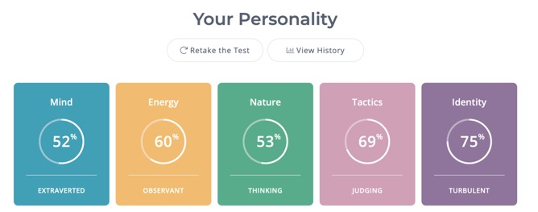
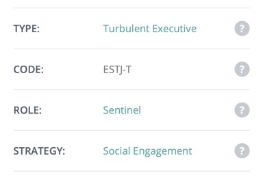
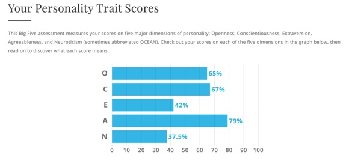
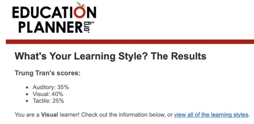

Assignment 2: IT World
Assignment 2: IT World
Program: BP
162 - Information Technology
Course:
COSC2083 - Introduction to information technology
Lecturer
:
Long Nguyen Minh
Lecture -
Tutorial class 1
Student:
Tran Quoc Trung - S3891724
I declare that in submitting all work for this assessment I have read,
understood and agree to the content and expectations of the Assessment
declaration.
1. Team profile
My future
team’s name that I wish for assignment 3 is Cool team.
These are my
tests results from the assignment 1: My profile:
Myers-Briggs test result from 16 personalities:

The
Myers-Briggs test shows that my personality type is ESTJ-T, which refer to five
dominant traits : Extraverted, Observant, Thinking,
Judging and Turbulent. These dominant traits describe me as a dedicated,
strong-willed, direct, honest and well-organized person. However, there are
some weaknesses including inflexibility in opinions, the uncomfortability
when facing unexpected situations, strong convictions in right, wrong and
socially acceptable things. Additionally, it also indicates the difficulty in
expressing emotion and in relaxing due to the need of surrounding people respectation.
The big five personality test result
from Truity:

The big five personality test result
includes five main attributes.
According to Truity :
● O (Openness): people average 58%,
which shows that I enjoy conversation about theory and concepts, I am creative,
original, artistic, imaginative and unconventional.
● C (Conscientiousness): people
average 55%, which means I tend to work hard and put plans into action.
Orderly, dependable, determined, ambitious and dutiful are adjectives to
describe a person who has this high.
● E (Extraversion): people average
51%, which indicates that I am an introvert, who is reserved, calm, aloof,
introspective, quiet and energized by spending time alone.
● A (Agreeableness): people average
63%, which shows that I prefer working cooperatively with others to achieve
common goals. People having a high percentage in this are accommodating,
selfless, helpful, altruistic and sympathetic.
● N (Neuroticism): people average 54%,
which means I would not easily react to stress and I
am stable, sellient, carefree, optimistic and
self-confident.
learning style test result from Education planner:

The learning
style test points out that I am a visual learner, which means I learn by
reading and seeing things, I memorise and analyse information by sight. This
can recommend some efficient ways of studying.
These
results would be relatively accurate, so they may become the references for me
to understand my personality strengths and weaknesses, my style of working and
studying. Therefore, I can plan and choose the most appropriate and efficient
option of studying, working individually and collaboratively.
In team work, the understanding of these results would make me
more confident with my strengths and make me identify and improve my
weaknesses. This would enhance the efficiency of my contribution in the team work.
According to
these results and my understanding of my personality, working and learning
style, they show that I am an well-organized and
dedicated person. Therefore, it would be an ideal team for me if I can work
with teammates who are also well-organized and strong-willed because I think it
is important for teammates to have a common goal and some positive based
characteristics that make everyone work well together. Moreover, it would be a
good opportunity for me to be a leader in a project for the first time in
university, but it would be better if one of my teammates already had
experience and ability to be a leader of my team. Finally, with my weaknesses
in characteristic, which are the inflexibility in opinion and the uncomfortability when facing unexpected situations, this
could be a great chance for me to work with teammates who are flexible and
great in dealing with unexpected situations. Thus, I can minimise and overcome
my weaknesses by learning from their strengths.
2.
Tools
Web link: https://ttrung224.github.io/IT_world/
GitHub repository: https://github.com/TTrung224/IT_world.git
3.
Project ideas
In this project, I have an idea
about cooking recipe suggestion application based on users’ available
ingredients. This would be an effective assistance for anyone who is preparing
a meal despites the gender, ages and experience with
cooking.
Gallup & Cookpad
(2019) shows that every person around the world cooked 6.9 meals a week on
average and the statistic is higher in Asia countries which is 7.3 meals. These
statistics show a big demand in cooking at home, especially in the pandemic
situation, people are more likely to prepare meals more at home. According to
Hunter (2020), 54% of US people who participated in the survey do cooking more
than before the COVID19 and the number of people who were looking for recipes
to use available ingredients are up to 60%. These show a big demand on recipes but it takes time to look for recipes that are
suitable with available ingredients via websites and social media. Therefore,
an application which can input available ingredients, then analyse and suggest
appropriate recipes is necessary.
My idea about this cooking recipe
application contains some features:
● Users will have their own account in
order to record their cooking habits and customize suggestions, advertisements
and other features for the best experience of users.
● With the ingredients input, people
can type the name of ingredients or use a voice-recognized open
source code to transform speech into text, then the region kind of
dishes they want. The quantity of calories in food has received increasing
attention from a lot of people. Therefore, with people who care about calories
of dishes or are on diet, they can input a range of calories that they want for
the most appropriate meal.
● After receiving and analysing the
input data, the application would try to suggest a list of dishes with their
recipes from a database that require only ingredients that users have and
suitable with the type of food and the calories that user want. These dishes
may contain some special tags like suggestions for people on diet, building
muscles or in medical treatment so these groups of users can have suitable
options for their interest or need.
● The database of recipes will be
built by recipes in trusted and popular cooking books, cooking sites or forums
which are written by professionals in order to ensure the safety of the
combination of ingredients and the safety of food in other aspects throughout
the cooking processes.
● After doing what the recipe
suggested, users can give rating, pictures of their dish, and
also comments and note about the recipe for later users and themselves
can have consideration on seasoning or cooking processes.
● Application can save time for busy
people in the way that they can input all the ingredients that they have and
request for the number of meals, so the application can analyse and suggest
that number of meals with appropriate dishes from what ingredients are
available in users’ pantry and refrigerator.
● Depending on the data of user
history cooking dishes, the application can also suggest recipes for new food, simple and
practical recipes or other appropriate special tags dishes. Thus, depending on
these suggestions, people can choose dishes that they want to cook, then the
application can make a list or menu of ingredients that they need to buy and
based on this, users can have a plan on buying needed ingredients.
● Users also can contribute their
creative recipes into the application, then other users will be able to rate
and give feedback on their recipe. However, the calories contained
and the food safety will be calculated, tested and guaranteed by a professional
or a laboratory in order to ensure the accuracy of the amount of calories, the
safety of food and the appropriate dishes suggest tag with people on diet,
building muscle or in medical treatment.
● From the application, I can get
profit from optimising advertisements for users, which means all the
advertisements in the application would be related to cooking or foods ,and it will be more efficient when ads suggestion can
base on users' hobbies of cooking and eating by getting and analysing the data
from the database.
● The application can also cooperate
with food events or cooking workshops to attract people from these events to
use this application and also introduce and create
opportunities for users who are interested in cooking to participate in these
events and workshops. This can create a network of people who love cooking or
who are interested in clean food, diet food or vegetarian food, so they can
communicate and share experiences with each other and with the other
applications users might be interested in.
The idea
needs an application creator tool such as MIT app inventor to visualise the
application. This application also relates to the database of recipes so Oracle
Apex can be used. With the speech recognition, the Live Transcribe’s
speech engine of Google or other open source code like
Project Deepspeech and Kaldi, which can be researched
and applied to the application. Moreover, Github is
another crucial tool for working with other teammates.
For this
project, skills and knowledge of using MIT App Inventor or Oracle Apex are
required. Furthermore, building and using databases, building application
skills using programming languages such as SQL, Java, Javascript
or C++ would be needed. These skills and knowledge are not easily adapted in a
short period of time. However, they are not only required for this assignment,
but also necessary for my path of becoming a website and application developer.
As a team project, skill of using Github is also crucial.
The success
of this project can help people, especially mothers in families, decrease the
pressure and time of thinking about recipes for what they have in their
refrigerators. This application also has a feature which helps them with the
plan of buying ingredients for their wanted cooking dishes. The application can
help improve the healthiness and quality of users’ meals, and
also help people try a variety of dishes from a variety of recipes which
are collected from professional cooking books, cooking sites and also users’
creative recipes. And the process of doing this project would also help me gain
a lot of knowledge, experience and skills that will be a part of my future
major of web and application development.
4.
Feedback
After finishing the project idea
section, I have asked two of my team members, who are Khang
Le and Hoang Truong, for their feedback. These are their feedback on my project
idea:
Khang Le’s feedback:
“After
reading your project idea, I think it is a very useful and well thought out
application for those who wants to cook at home, especially during this time of
the pandemic when we can’t order food online. Here are some of my comments:
-
Your description does not meet the word count and to do that I think you should
add another feature to your application. Advertisement is a good idea since
food always come with advertisement. You can display the ads of restaurants
which are relevant to the user’s choice of food. You can also display food
events near the user’s address so they can have more choices on the food that
they want. In general, I think your project will attract lots of people and it
will be successful.”
I
totally agree with the idea about advertisement in the application and also the idea about food events. From these ideas, I
have reflected and added a description about having appropriate and customised
advertisements for users based on their habit of cooking recorded and analysed
in the database. Moreover, with the food events suggestion, I also added a
feature to connect people who love cooking and food by recommending them
cooking and food events, then they can connect with each other and have their
own network of people sharing the same interest in cooking.
Hoang
Truong’s feedback:
“App
does not have an entrusted instrument - in this case could be anything e.g. a professional, an expert, a third party app that
specialized in cooking recipe - to certify the data in the database. Without
such a paramount instrument, the data could potentially become harmful than helpful
since the recommended recipe from the app could become unappetizing for the
user. Hence, there must be something or someone with a level of expertise in
culinary - especially in choosing randomized ingredients to create a recipe -
to certify and verify the existing data in the database.”
I really appreciate the feedback
about the quality problem of recipes, especially poison. I have forgotten about
the description of database sources, I will add the
detail of standard database sources in the project idea description. About the
user’s sharing recipes, I have reflected and added an idea about cooperating
with professionals or a laboratory to test and guarantee the safety of recipes
from users and from other untrustworthy sources. These changes would improve
and ensure the safety of recipes but they will not
ensure the appropriate tasty for users because people’s taste is various, so
the seasoning should depend more on their personal taste and experience than
the recipe. However, I have added another feature which can be called a note
for users to notice anything they want to change in a recipe that can suit
their personal taste for the next time of cooking that recipe.
5.
IT technologies
● Artificial intelligence and machine
learning:
Artificial intelligence is a term of
technology defined for the first time in the 1950s, which relates to the
application of human intelligence into machines. Helm et al. (2020) points out
the unprecedented development of artificial intelligence due to the rapid
increase in the amount of large data sets or big data. AI is the combination of
many technical terms, two of which are machine learning and deep learning.
According to Jakhar & Kaur (2020), AI machines
will complete the provided tasks based on their installed rules and algorithms.
With machine learning, these algorithms will be applied in learning from the
input data in order to modify itself and increase the accuracy and decrease any
errors occurring in the analysis and decision making
processes. Therefore, an AI system needs to have a very large set of data to
continuously increase its performance and become smarter. Jakhar
& Kaur (2020) also shows that the process of analysing data for machine
learning is called deep learning, which is a subset of machine learning. This
is the incorporation of algorithms and computational models, which have the
similar architecture of the biological neural networks in the human brain. With
the combination of these two technical terms, artificial intelligence machines
and softwares have the ability to
receive and analyse data, learning and modifying itself based on those data,
and making decisions to complete their tasks with human logic.
On an unprecedented scale,
artificial intelligence has progressed from a theoretical concept to a
practical implementation (Helm et al. 2020). It’s performance in evaluating a
very large amount of data through many activities of people on the internet in
near real-time, content recommendation on streaming services (Netflix, Disney+,
Apple TV+) or on many social media platforms (Facebook, Tiktok,
Youtube), autonomous driving vehicles (Tesla),
content checking processes for policies violation on social media and the
recommendation for advertising and purchasing. AI frequently runs in the
background of personal tech devices and has grown deeply embedded in many
aspects of society.
In the next few years, there would
be many potential industries that AI applications can be improved on or take
part in like healthcare, marketing, security, automotive (Shailendra
2019). Healthcare is known as a very important part of life and there
are already some slight applications of AI mostly in diagnosis or chatbot, and it is predicted
that there will be many more applications of AI in this industry. Shailendra
(2019) shows that those applications can be a new AI capabilities study
published on Nature that could accurately predict schizophrenia, or the
cooperation between Google and Johnson & Johnson in creating a surgical
robot using AI, and the application in analysing real-time data supporting
accurate decisions of doctors. Current AI technologies are
capable of doing some of those and to help hospitals access these possibilities
of data and successfully use electronic health records, there should be
cooperation between hospitals and tech Giants.
There are two major impacts of AI on people's workplace and
society. Firstly, with the workplace aspect, AI is a cost-effective solution
for firms’ tasks, so it will cause an decreasing or
disappearing of employment demand in many jobs. IBA Global Employment Institute
(2017) points out that there are two groups of occupations that would be
eliminated due to the development of AI. They are high-routine work such as
accountant, court clerk and other jobs with a high level of routine in their
performance, and simple physical or manual work which could be replaced by
automotive systems. Another research on the impacts of AI on the service jobs,
in this field, they separate it into four levels of difficulty of intelligence
that AI can adapt from the easiest to the hardest: mechanical, analytical,
intuitive and empathetic (Jorge et at. 2020). AI is already capable of
replacing jobs that only require mechanical intelligence and a part of jobs
requiring analytical intelligence. The other two intelligence groups of jobs
have still not been affected by the development of AI much. Secondly, the
increase of AI applications also affects both negatively and positively on
society. AI can provide cost-effective solutions or support for most tasks in
any field of society. Chattopadhyay and Majumdar (2020) point out some aspects
of society that AI has affected. AI is well-known as an effective solution for
many business tasks, and it is also applied in the management system of many
countries’ governments, in the healthcare industry, in agriculture and in
climate change problems. AI has improved people's work efficiency and made some of those jobs more easily and accurately handled.
However, because of this convenience, AI also has some negative effects on
society. Related to people’s data storage and analysis, there is a rising concern about data
security, privacy and the threat of cyber attack, and also the problem of employment
curtailment and the decrease or elimination of some jobs’ employment demand
(Chattopadhyay & Majumdar 2020).
In my opinion, AI technologies have positively affected my
and surrounding people’s daily life. AI frequently runs in the background of personal tech
devices and has grown deeply embedded in many aspects of society. Therefore, it
can improve our daily life experience with some appropriate entertainment
contents that are suggested by AI analysis, advertising the products that are
in our demand by tracking and analysing our data. And many other features of
applications or websites, which we are daily using, contain the AI technologies
in many different levels, which are created and produced to improve the
convenience, efficiency and experience of our everyday tasks and activities.
● Natural Language processing and
chatbot:
Natural language processing is a
branch of artificial intelligence, which is the use of computational methods in
analysis of textual documents or publications and other linguistic data forms
(Karin and Kevin 2013). The combination of AI, machine learning, deep learning,
computational linguistics methods enable this technology to process and
understand human language with the full user’s meaning, intent and sentiment in
the form of voice, text or other linguistic method. From this natural language
processing technology, natural language understanding and natural language
generation technologies, people have developed a program that is called
chatbot. Artificial Solutions (2020) defines chatbot as an
program that provides people with the ability to interact with technology by a
variety of linguistic input such as speech, text, gesture and touch. Chatbot
has been developed for decades with several names such as conversational AI
bot, intelligent virtual assistant, virtual customer assistant, or
conversational agent. AT the first steps of development, chatbot was only used
in customer service environments, but during the decades of development,
chatbot nowaday is being used in a variety of tasks
which mostly aim to improve customer satisfaction, experience and increase
business efficiency. Artificial Solution (2020) shows a list of popular chatbot
that has been created during the decades of development such as Turing test
(1950), Eliza (1966), Racter (1984), Elbot (2000), Siri (2010), Alexa (2015) or Facebook
chatbots (2016). They are some of the special marks of chatbot development
which started with Turing, which is a test of a machine's ability to exhibit
intelligent behaviour, to today's assistants like Google Assistant which can engage in two-way conversations.
Main features of chatbot is based on the development
of natural language processing (NLP) which is used to convert and standardise
human language input forms, natural language understanding (NLU) which is
technologies that help chatbot understand the information given by human after
the NLP, and natural language generation (NLG) which is technologies provide
chatbot with the ability to create meaningful and personalised response to
users based on what NLU understand. Thanks to those technologies and also the development of smartphones, wearable devices
and the internet of things, people can easily access any chatbot and ask for
whatever they need, and this helps chatbot become popular with a lot of people.
Chatbot is currently used mostly in
customer service and on internet of things devices. Many websites of big
retailers and banks are using chatbot as a customer service staff who can
receive and answer customers about enterprises’ products or services
information and regulations. With smaller businesses in VietNam,
there are a lot of tools to create their own chatbot that are optimised for
their specific needs and then it will working on
Facebook Chatbots on Facebook Messenger, this is one of the most popular
chatbot platforms that are being used to interact with customers 24/7. With
smartphones and internet of things devices, chatbot plays a role of personal
assistant with the tasks of controlling applications in the devices’ system or
devices in the IOT system in the user house. This especially became common due
to the increase of smart houses.
According to Artificial Solution
(2020), there would be two major changes to chatbot in the coming years.
Firstly, they predict that chatbot will develop rapidly and people would be
able to use only voice-enabled conversational AI to trade on ecommerce
platforms. Secondly, they expect to see firms’ intranets of chatbot
applications that can help these applications work and share information
together smoothly. They also point out that the development of intelligent
routing will make a crucial contribution to those handover processes in
businesses’ intranets.
Chatbot has slightly impacted the
businesses’ customer service when 32% of customer respondents receive the best
results when using chatbot in some capacity and about 74% consider the
advantages of engaging with chatbot for faster resolution or more assistance
accessibility (LogMeIn 2018). Although AI chatbot does not currently perform as
well as a human agent in the personalisation and empathy, but it’s advantages are the quicker resolution and better
process efficiency. Therefore, chatbot has improved the efficiency of agents
and made their job easier in resolving customers’ enquiry or issue. From these
reasons, 35% of respondent businesses are already investing in AI technologies
and 53% are planning to invest (LogMeIn 2018). With these investments and the
chatbot development, there would be many more creations of more efficient
chatbot in the next few years to meet a very large demand of users when there
were 21% of adults and over 80% of generation Z in the U.S used voice or text
bot for searching information and shopping (Xueming
et al. 2019). However, due to the efficiency and development of chatbot, there
is a rising awareness that AI chatbot may affect the demand for human customer
service agent employment in the coming years.
The development of natural language
processing, understanding, generation and the development of chatbot help our
daily life become easier, more convenient. There are many smartphone
virtual assistants that we can interact with and command them to do many daily
tasks such as make a phone call, book a taxi, set an alarm or write a message
just by our speech. They are also more convenient when they have been applied
to smart homes, people can control many devices such as light, air conditioner,
music speaker or vacuum cleaner robot in their house also by their speech
recognition. With some questions about businesses’ products or services, we
would be able to get quicker answers from a chatbot 24/7 rather than having to
wait for an online human agent reply.
6.
IT work
I have watched and read about some
of the daily working routine of some professionals working in some different
job types in the IT field. With the source of Youtube
videos, I will call them by their Youtube channel
name.
● Software engineer/ developer
This job information is based on the
sharing of two professionals who are The Life of Eta working as a software
engineer for Cisco and Adrian Twarog working as a
software developer in an Australian agency.
https://youtu.be/BLO5vZyD84w (The Life of Eta)
https://youtu.be/8gqXda_r1hQ (Adrian Twarog)
The life of Eta’s work is more about
coding, debugging and maintaining software in a team, and sometimes working
with company server. On the other hand, the position of Adrian Twarog has less coding and is more about planning,
scheduling and making sure of his team working probability.
Most of the interaction of The life of Eta is with his team including other IT
professionals. With Adrian Twarog, he interacts with
not only his teammates but also colleagues from other departments for planning,
scheduling or solving problems, he also interacts with
clients who are also businesses via email and also face to face meetings.
The life of Eta has most of his
daily working time which is from 9:10AM to 5:45PM is for coding at his office,
and between the coding time sections, he usually has a quick break at the other
areas of the company. The other part of his working time is for team meetings.
Adrian Twaro's schedule of working time and place is
quite different, it is half office time for managing, planning and meeting. The
other half is working from home, especially Wednesday is his pure coding day.
From their sharing, the challenge of
The Life of Eta position is about the technical problem of fixing code or
server commands while the challenge of Adrian Twaro
is not only about technical problems, but also about the planning, scheduling
and managing his team work.
● Web developer
This profession information is based
on the sharing of two professionals who are Damien working as a back_end web developer, and Lynne McCormick working as a front-end web developer at Screenmedia, which is a Glasgow based digital design agency specialising in web
design and development.
https://youtu.be/GpUFCNx-7SA
(Damien, Youtube channel name :
Welcome to the jungle studio)
https://codeclan.com/blog/day-life-web-developer/ (Lynne McCormick)
Damien
is a back-end developer, so his job is generally taking care of all the
technical aspects of products, especially the part that users can not see. In contrast, Lynne McCormick is a front-end developer so her job is more about creating and developing
the UI and UX of projects.
Both
of them share that most of their interaction is
with their teammates of projects. While Damien also communicates with product
teams who work with clients and establish, organise web functions, Lynne McCormic mostly interacts with project managers and
designers beside of her teammates, but she also works with a lot of people from
a variety of backgrounds.
Damien
spends most of his daily working time in the office for two main parts of his
job, which are designing with the definition and schedule of projects features,
and coding. With Lynne McCormic, she shares more
about her meetings schedule, which usually occur in the morning and
occasionally in the afternoon, mostly rest of her time is for coding and also sketching in the studio.
They
both share that every project has their own challenges, so they advise people
who want to follow this industry to take part in as many as projects to learn
from those challenges.
● Game developer
This profession information is based
on the sharing of two professionals who are Masa working as a programmer for
Bandai Namco studio, which is one of the biggest game companies in Japan , and Josua McGraw working as a programmer in a game
tool development company in Sydney and also working on his indie game
development.
https://youtu.be/e_TxH59MclA (Masa, Youtube
channel name: Paolo fromTOKYO)
https://youtu.be/YrYs_9lEGyY (Josua
McGraw, Youtube channel name: Kevin Truong)
Most of the tasks of Masa are about coding
for projects while Josua McGraw's job is to develop
indie and do natural game development.
Masa mostly interacts with his
teammates who are also programmers via email or scrum meetings everyday. Joshua McGraw shares that in the game industry,
he has to work with people from different backgrounds
such as other technical staff, designer or artist.
While Josua
McGraw spends half of his time at the game tool development company, and the
other half on his indie game development, Masa spends most of his daily working
time in the office for coding, 30 minutes at the meeting room for scrum
meetings everyday and another scrum meeting every two
week.
Josua McGraw shares one of the biggest
challenges in the industry game is to interact well with people from different
backgrounds like programmer, designer and artist, and he also share another challenges of the indie game developer are the finance and
motivation challenges because making money from game is not easy and individual
work would receive any push so keeping motivated, positive and working hard is
needed.
● IT system engineer - manager
This job information is based on the
sharing of two professionals who are Joel Margliano
working as a manager of information system for Kankakee school district 111,
and Zeta Zephyr working as a
software system engineer in Singapore.
https://youtu.be/XBGQNVvkyGw
(Joel Margliano, Youtube channel name:
SkywardK12)
https://youtu.be/f2xYu5-Sp20 (Zeta Zephyr)
Joel Margliano
is a manager of information systems so his
responsibilities are to make sure all the systems work properly and also
receive help desk calls. Zeta Zephyr is a software system engineer
and we work on developing systems.
Joel Margliano
daily interaction is with other professionals and because of his position of
helping desk, he also interacts with users who are students and business. With
Zeta Zephyr, his interactions in daily working time are also with other
professionals and colleagues.
The daily working time of Joel Margliano is mostly spent in the office, and he also has
more work to do at home after dinner. Zeta Zephyr has all the work done in his
office with the morning for checking, team communications, planning, online
meeting and the afternoon for coding.
● IT manager/ Scrum master
This job information is based on the
sharing of two professionals who are Simone who has worked as a project manager
or scrum master for about two years, and Simon Ferrari working as a IT manager
in Datacom system in New Zealand
https://youtu.be/HTJxsrW_Kow (Simone, Youtube
channel name : Simone Says)
https://youtu.be/hFhuMGanjT8 (Simon Ferrari, Youtube
channel name : Careersnz)
They both share that the work they
do is managing, scheduling, involving in any activities of their staff and
helping their staff or team members to solve problems.
Simone shares that she works closely
with her team so she interacts mostly with her team
members, and also interacts with business or product owner for the progress of
the project. With Simon Ferrari, his daily working time is spent with the
project team, project managers and business managers.
Simon shares her experience of
working from home or remote work so most of her working time is on her home
working desk. Simon Ferrari spends his daily working time at different rooms of
the company for a variety of tasks with different teams. He also shares that
his company sometimes needs him to travel and he has
time working in Australia and Cambodia.
They both think that the challenges
of an IT manager are being able to organise, schedule and communicate well with
other staff members.
References:
16 Personalities n.d,
ESTJ personality, viewed 15 July 2021, <https://www.16personalities.com/estj-personality>.
16 Personalities n.d,
Sentinels role, viewed 15 July 2021,
<https://www.16personalities.com/articles/roles-sentinels>.
16 Personalities n.d,
Social engagement strategy, viewed 15
July 2021, <https://www.16personalities.com/articles/strategies-social-engagement>.
Adrian
Twarog 2021, A day in the life of a
Developer... (at an Australian Agency), Youtube, 13 May, viewed 20
August 2021, <https://youtu.be/8gqXda_r1hQ>.
Artificial Solutions 2020, ‘Chatbots: The Definitive Guide’, Artificial Solutions.
Careersnz
2017, IT Manager - A
day in the life, Youtube, 9 March, viewed 21 August 2021, <https://youtu.be/hFhuMGanjT8>.
Chattopadhyay, H, K & Majumdar, D 2020, ‘Artificial intelligence and its impacts on
the society’, International Journal of Law, vol. 6, pp. 306-310.
CodeClan Team 2016, ‘A Day in the Life of a Web Developer’, CodeClan blog., blog post, 17 april, viewed 20 August 2021, <https://codeclan.com/blog/day-life-web-developer/>.
Education Planner n.d, Learning style quiz, viewed 8 July 2021,
<http://www.educationplanner.org/students/self-assessments/learning-styles-quiz.shtml>.
Gallup & Cookpad
2020, A Global Analysis of Cooking Around
the World, Gallup.
Helm,
J, M, Swiergosz, A, M, Haeberle, H, S, Karnuta, J, M, Schaffer, J, L, Krebs, V, E, Spitzer, A, I,
& Ramkumar, P, N, 2020, ‘Machine Learning and Artificial Intelligence:
Definitions, Applications, and Future Directions’, Current Reviews in Musculoskeletal Medicine, vol. 13, pp. 69–76.
Hunter 2020, America Gets Cooking: The Impact of COVID-19 on Americans’ Food Habits,
Hunter.
IBA Global Employment Institute
2017, Artificial Intelligence and
Robotics and Their Impact on the Workplace, IBA
Jakhar,
D, & Kaur, I 2020, ‘Artificial intelligence, machine learning and deep
learning: definitions and differences’, Clinical and Experimental
Dermatology, vol. 45, pp. 131–132.
Jorge, G, T, Pedro, F &
Teixeira, F, L 2020, ‘Understanding the
Impact of Artificial Intelligence on Services’, Exploring Service Science,
pp. 202-213.
Karin, V & Kevin, B, C 2013, ‘Natural Language Processing’, Encyclopedia
of Systems Biology, pp. 1495-1498.
Kevin
Truong 2012, Day in the Life of a Game
Developer, Youtube,
26 May, viewed 20 August 2021, <https://youtu.be/YrYs_9lEGyY>.
LogMeIn
2018, Impact of Chatbots and AI on the
Customer Journey, LogMeIn.
Paolo
fromTOKYO 2019, Day
in the Life of a Japanese Game Programmer, Youtube, 30 November, viewed
20 August 2021, <https://youtu.be/e_TxH59MclA>.
Shailendra, S 2019, ‘The Impact Of
Artificial Intelligence Over The Next Five Years’, Forbes, 30 May, viewed 17 August 2021, <https://www.forbes.com/sites/forbesbusinessdevelopmentcouncil/2019/05/30/the-impact-of-artificial-intelligence-over-the-next-five-years/?sh=7168ea824498>.
Simone
Says 2021, Day In
The Life of A Project Manager (Tech), Youtube, 1 March, viewed 21
August 2021, <https://youtu.be/HTJxsrW_Kow>.
SkywardK12
2019, A Day in the Life: Manager of
Information Systems (IT Manager), Youtube, 2 December, viewed 21
August 2021, <https://youtu.be/XBGQNVvkyGw>.
The
Life of Eta 2020, Daily life of a
Software engineer in Silicon Valley, Youtube, 14 January, viewed 20
August 2021, <https://youtu.be/BLO5vZyD84w>.
Truity 2018, The five factors of personality, viewed 8 July 2021, <https://www.truity.com/sites/default/files/big_five_sample.html>.
Welcome
to the Jungle Studio 2019, OH MY JOB! : Back-end Developer, Youtube, 21 November, viewed
21 August 2021, <https://youtu.be/GpUFCNx-7SA>.
Xueming,
L, Siliang, T, Zheng, F, & Zhe,
Q 2019, ‘Machines versus Humans: The
Impact of AI Chatbot Disclosure on Customer Purchases’, Marketing Science,
vol. 38, pp. 913-1084.
Zeta
Zephyr 2020, Day in the Life of a
Software Systems Engineer in Singapore, Youtube, 20 March, viewed 21
August 2021, <https://youtu.be/f2xYu5-Sp20>.